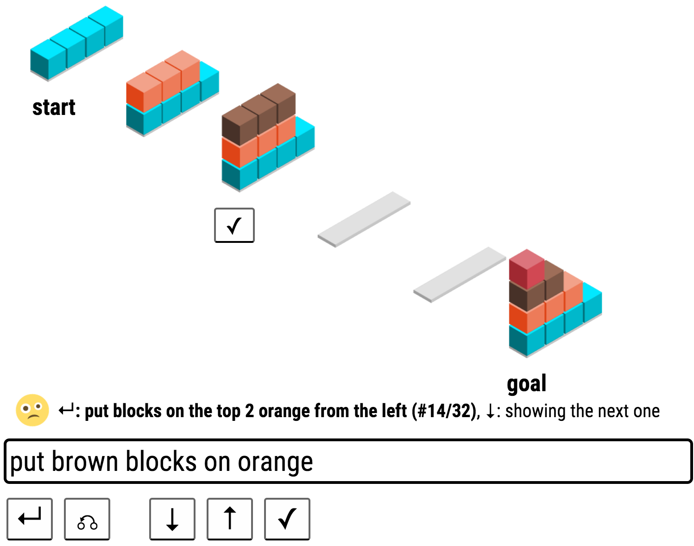

Demo page for SHRDLURN
ACL 2016: the language game

with pragmatics
without pragmatics
Richerworld
richerworld
run locally
Info
github
CodaLab worksheet for ACL 2016
- if the server is down add ?local, and run your own server found in the codalab worksheet